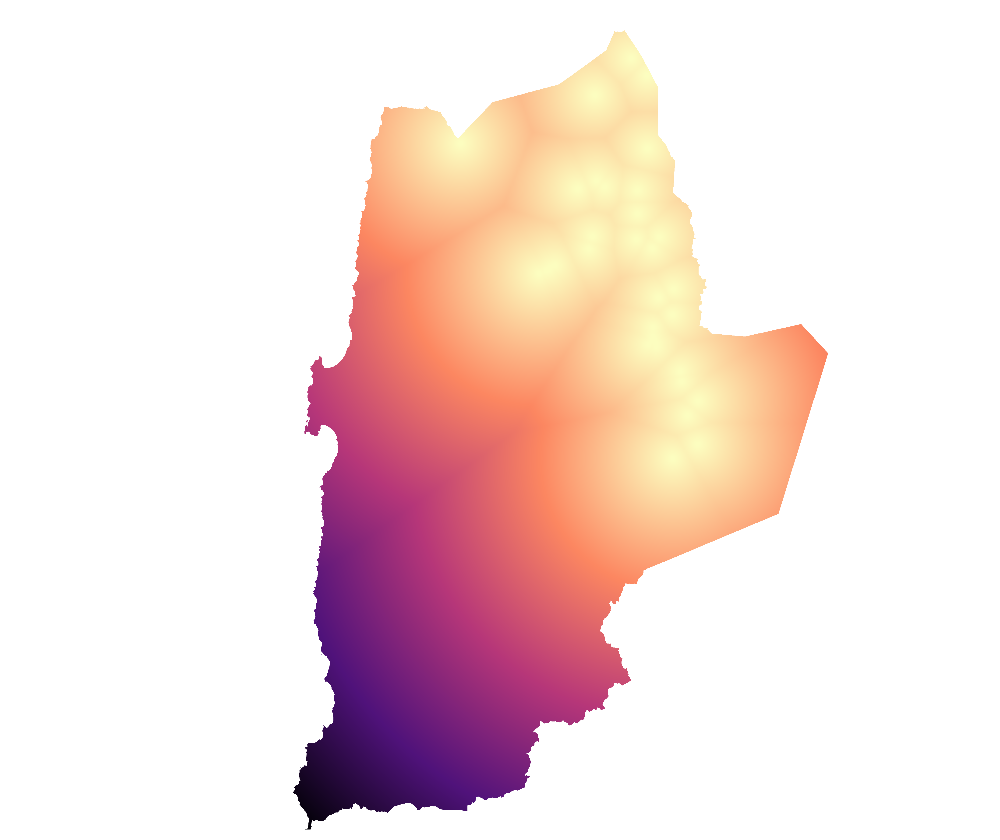
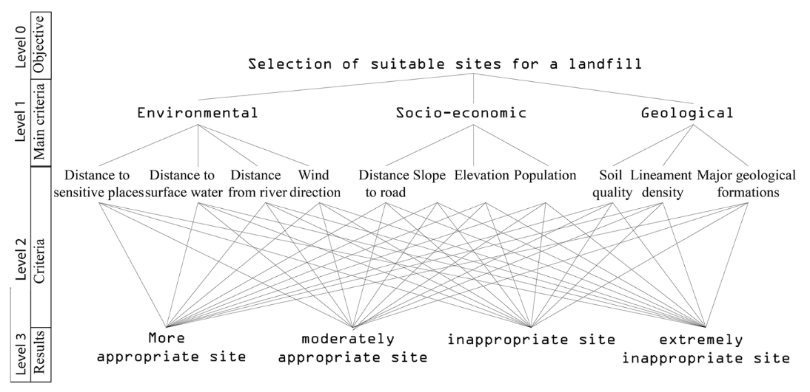

Appendix D — Metetodología
E Materiales y Métodos
E.1 Materiales
E.1.1 Área de Estudio
Región de Antofagasta
Considerando que el análisis multicriterio tiene como objetivo identificar áreas adecuadas para construir plantas de generación de energía eléctrica, se eligió la Región de Antofagasta para aplicar el análisis multicriterio con las variables y criterios acordados.
La Región de Antofagasta es una de las 16 regiones en las que se divide Chile y su capital es Antofagasta. Está ubicada al norte del país y limita al norte con la región de Tarapacá, al este con Bolivia, al sur con la región de Atacama y al oeste con el Océano Pacífico. Se caracteriza por su producción de cobre y su contribución a la economía chilena.
Tiene una superficie de 126.049 km^2 y una población de 607.534 habitantes en 2017, según el Instituto Nacional de Estadísticas. La región está compuesta por las provincias de Antofagasta, El Loa y Tocopilla. Además, cuenta con el PIB per cápita más alto del país, superando los USD 25.000.
Cuenta con una superficie de 126.049 km^2 y una población según el Instituto Nacional de Estadísticas (INE) de 607.534 habitantes en 2017. La región está compuesta por las provincias de Antofagasta, El Loa y Tocopilla. La región cuenta con el PIB per cápita más elevado del país, superando los USD 25.000.
Comunas
La región de Antofagasta se encuentra en el norte de Chile y limita al norte con la región de Tarapacá, al este con Bolivia, al sur con la región de Atacama, y al oeste con el Océano Pacífico. Esta región es conocida por su producción de cobre y su contribución a la economía chilena.
Dentro de la región de Antofagasta, existen 3 provincias y 9 comunas, que se distribuyen de la siguiente manera: la provincia de Antofagasta, con sus comunas homónimas y Mejillones; la provincia de El Loa, con sus comunas de Calama, San Pedro de Atacama y Ollagüe; y la provincia de Tocopilla, con sus comunas de Tocopilla, María Elena y la localidad de Baquedano (Figure E.1). Cada una de estas provincias y comunas tiene características geográficas, culturales y económicas particulares que las hacen únicas y atractivas para visitar o establecerse en ellas.

| Provincia | Comuna | Area_hc |
|---|---|---|
| ANTOFAGASTA | TALTAL | 2040306.3 |
| ANTOFAGASTA | ANTOFAGASTA | 3069117.0 |
| ANTOFAGASTA | MEJILLONES | 356884.4 |
| ANTOFAGASTA | SIERRA GORDA | 1288042.4 |
| EL LOA | CALAMA | 1558824.9 |
| EL LOA | OLLAGÜE | 291847.7 |
| EL LOA | SAN PEDRO DE ATACAMA | 2354323.4 |
| TOCOPILLA | MARÍA ELENA | 1243177.7 |
| TOCOPILLA | TOCOPILLA | 403068.5 |
E.1.2 Variables espaciales base
Un componente esencial en las decisiones multicriterio son precisamente los criterios que se utilizarán para ponderar la decisión por cada alternativa, en el caso de estudio estas corresponden a variables espaciales que se encuentra en formato de puntos o polígonos. Estas variables están relacionadas con diferentes temáticas como el medio ambiental, social, patrimonial y normativa. A continuación se muestran dos ejemplos de información espacial en formato de puntos y polígonos.

E.1.3 Cálculo de Distancia en Raster
En esta etapa inicial, se procede a generar una grilla regular con una resolución espacial de 30x30 metros, la cual se utilizará para el cálculo de la distancia de cada pixel a los puntos o polígonos más cercanos, según su tipo de geometría espacial. Este proceso es esencial para el análisis de datos geoespaciales.
Para el cálculo de la distancia, se utiliza la distancia euclidiana (Equation E.1), la cual se obtiene a través de la ecuación que corresponde a la distancia entre dos puntos en un plano cartesiano. Este cálculo es crucial para determinar la cercanía entre los puntos y los polígonos, lo que a su vez permite la identificación de relaciones espaciales de proximidad de toda el área de estudio.
d(P_1, P_2) = \sqrt{(x_2-x_1)^2+(y_2-y_1)^2} \tag{E.1}
Es importante destacar que la generación de esta grilla y el cálculo de la distancia son procesos fundamentales en el análisis de datos geoespaciales, y su precisión y exactitud son esenciales para obtener resultados confiables y precisos en el estudio de la distribución espacial de fenómenos y variables geográficas. Como resultado de lo anterior se obtiene un raster de distancia como se observa en la figura Figure E.3

E.2 Reclasificación
Los resultados del proceso descrito anteriormente, en el cual se creó un raster regional con valores numéricos continuos, serán reclasificados y transformados en variables discretas del 1 al 5. Se seguirán los criterios acordados en los talleres de participación, análisis bibliográfico y técnico, los cuales se detallan en la matriz de criterios (Table E.2).
| Tematica | Variable | Capas | Criterio_1 | Criterio_2 | Criterio_3 | Criterio_4 | Criterio_5 | Unidad |
|---|---|---|---|---|---|---|---|---|
| SOCIAL | Asentamientos y territorios indigenas | Comunidades indígenas | 500 | 2000 | 5000 | 10000 | MAX | m |
| SOCIAL | Asentamientos y territorios indigenas | Areas_de_desarrollo_indígena | 500 | 2000 | 5000 | 10000 | MAX | m |
| SOCIAL | Asentamientos y territorios indigenas | Tierras_indígenas | 500 | 2000 | 5000 | 10000 | MAX | m |
| SOCIAL | Poblamiento | Campamentos | 500 | 2000 | 5000 | 10000 | MAX | m |
| SOCIAL | Poblamiento | Asentamientos_Humanos | 500 | 2000 | 5000 | 10000 | MAX | m |
| AMBIENTAL | Radiacion solar | radiacion normal directa | 3.8 | 4 | 4.5 | 5 | MAX | kWh/M2/día |
| AMBIENTAL | Zonas saturadas y latentes | Zonas_saturadas_y_latentes | 1000 | 2000 | 3000 | 4000 | MAX | m |
| AMBIENTAL | Areas protegidas | Sitios_RAMSAR | 1000 | 2000 | 3000 | 4000 | MAX | m |
| AMBIENTAL | Areas protegidas | Flora_y_fauna_vulnerable_y_peligro | 1000 | 2000 | 3000 | 4000 | MAX | m |
| AMBIENTAL | Areas protegidas | Areas_snaspe | 1000 | 2000 | 3000 | 4000 | MAX | m |
| AMBIENTAL | Areas protegidas | Acuíferos_protegidos | 1000 | 2000 | 3000 | 4000 | MAX | m |
| AMBIENTAL | Pendiente | R02_PENDIENTES_GRADOS | 2 | 5 | 10 | 12 | MAX | % |
| PATRIMONIO | Uso agricola de suelo | Uso_agrícola_de_suelo | 500 | 1000 | 1500 | 2000 | MAX | m |
| PATRIMONIO | Uso forestal del suelo | Uso_forestal_del_suelo | 1000 | 1500 | 2000 | 2500 | MAX | m |
| PATRIMONIO | Uso Bosque mixto o nativo | Bosque_Nativo | 1500 | 2500 | 3500 | 4500 | MAX | m |
| PATRIMONIO | Sitios arqueologicos y paleontologicos | 19_Sitios_arqueológicos | 400 | 800 | 1200 | 1600 | MAX | m |
| PATRIMONIO | Bienes nacionales protegidos | Bienes_nacionales_protegidos | 800 | 1000 | 2000 | 3000 | MAX | m |
| PATRIMONIO | Lineas de transmision existente | Líneas_de_transmisión_existentes | 2500 | 5000 | 10000 | 20000 | MAX | m |
| PATRIMONIO | Infraestructura existente | RED_VIAL_TOBLER | 3000 | 5000 | 10000 | 20000 | MAX | m |
| NORMATIVA | Zonas de interes turistico | ZOIT | 600 | 800 | 1000 | 2000 | MAX | m |
A modo de ejemplo se presenta el proceso de reclasificación de un modelos digital de elevación correspondiente a una variable continua (Figure E.4 (a)), la cual es reclasificada en una variable discreta(Figure E.4 (b)).

F Proceso de Análisis Jerárquico (AHP)
El Proceso de Análisis Jerárquico (AHP Analysis es una técnica estructurada para tratar con problemas complejos de decisión. Esta metodología permite la construcción de un problema a partir de objetivos, criterios y alternativas jerarquizados. El AHP fue desarrollado por T. L. Saaty (1980) y selecciona alternativas en función de una serie de criterios o variables normalmente jerarquizados. La aplicación del AHP puede ser utilizada para la selección de proyectos, la evaluación de riesgos, la toma de decisiones financieras, entre otros.
El “Proceso de Análisis Jerárquico” es una metodología ampliamente utilizada en el ámbito de la toma de decisiones multicriterios espaciales. Esta metodología ha sido aplicada en una gran variedad de contextos, desde la selección de zonas adecuadas para la construcción de vertederos, hasta la identificación de áreas prioritarias para la conservación de la biodiversidad y a demostrado su eficacia en contextos similares. Como casos de uso de esta metodología en el campo de generación de Energía es el de Orrego (2021) que realizó un Análisis espacial multicriterio para la ubicación de parques eólicos y granjas solares en Colombia; otro caso el de (Guerrero Hoyos, Vélez Macías, and Morales Quintero 2020) con su estudio llamado “Energía eólica y territorio: sistemas de información geográfica y métodos de decisión multicriterio en La Guajira (Colombia)“ .
Como referencia se puede considerar esta imagen de Abdelouhed et al. (2022) que utilizó para selección de sitios idónos parar ubicar un vertedero, donde se observa las dinámicas entre itéms, variables, criterios y resultados:

Para facilitar el entendimiento el proceso de cálculo del AHP se utiliza como ejemplo los pasos realizados para analizar las plantas de generación de energía Solar Fotovoltáica para región de estudio.

Las variables (Table 7.1) espaciales utilizadas para realizar el procesos de análisis jerárquico corresponden a las siguiente:
F.1 Matriz de Comparación de Criterios
AHP es un método de comparación por pares que se utiliza en los criterios con respecto al objetivo, el cual es tomar la mejor decisión tomando en consideración diferentes criterios, por cada una de las alternativas, en el caso territorial serían las diferentes áreas
Estas comparaciones por pares se llevan a cabo para todos los factores relevantes dentro de un análisis considerando la siguiente escala. (Table F.1)
| Intensidad | Deninición | Explicación |
|---|---|---|
| 1 | Igual importancia | Dos criterios o elementos contribuyen de igual forma al cumplimiento del objetivo |
| 3 | Importancia moderada de un criterio sonbre el otro | La experiencia y el juicio favorecen levemente una actividad sobre la otra |
| 5 | Importancia esencial o fuerte | La experiencia y el juicio favorecen fuertemente una actividad sobre la otra |
| 7 | Importancia muy fuerte o demostrada | Una actividad es mucho más favorecida que la otra y su predominancia se demostró en la práctica predominancia se demostró en la práctica |
| 9 | Importancia extrema o absoluta | La evidencia que favorece una actividad sobre la otra es absoluta y totalmente clara |
| 2, 4, 6, 8 | Valores Intermedios | Cuando es necesario llegar a un compromiso entre dos sentencias adyacentes |
De acuerdo con T. L. Saaty (1980), para n criterios es posible construir una matriz A=[a_{ij}], con i,j =1,2,...,n. El valor de cada a_{ij} corresponde a la importancia relativa del criterio C_i (fila i) sobre el criterio C_j (columna j), según la escala fundamental propuesta por Saaty (Table F.1). Cuando i=j, el valor de a_{ij} será igual a 1 ya que estamos comparando un criterio con el mismo.
A= \begin{bmatrix} 1 & a_{1,2} & a_{1,3} & \dots & a_{1,n} \\ a_{2,1} & 1 & a_{2,3} & \dots & a_{2,n} \\ \vdots & \vdots & \vdots & \ddots & \vdots \\ a_{n,1} & a_{n,2} & a_{n,3} & \dots & 1 \end{bmatrix}
Como producto del análisis de los resultados obtenidos de lo talleres del apartado anterior, se realizó la jerarquización de cada una de las variables con respecto a las demás, construyendo una matriz A de comparación (Table F.2), esto para las variables de generación de energía eléctrica solar fotovoltaíca.
| A | B | C | D | E | F | G | H | I | J | K | L | M | N | |
|---|---|---|---|---|---|---|---|---|---|---|---|---|---|---|
| A | 1.0 | 1.0 | 5.0 | 5 | 1.0 | 5.0 | 5 | 7 | 3.0 | 1.0 | 3.0 | 5.0 | 5.0 | 3.0 |
| B | 1.0 | 1.0 | 5.0 | 5 | 1.0 | 5.0 | 5 | 7 | 3.0 | 1.0 | 3.0 | 5.0 | 5.0 | 3.0 |
| C | 0.2 | 0.2 | 1.0 | 3 | 0.2 | 1.0 | 3 | 3 | 0.3 | 0.2 | 0.3 | 1.0 | 1.0 | 0.3 |
| D | 0.2 | 0.2 | 0.3 | 1 | 0.2 | 0.3 | 1 | 1 | 0.3 | 0.2 | 0.3 | 0.3 | 0.3 | 0.3 |
| E | 1.0 | 1.0 | 5.0 | 5 | 1.0 | 5.0 | 5 | 7 | 3.0 | 1.0 | 3.0 | 5.0 | 5.0 | 3.0 |
| F | 0.2 | 0.2 | 1.0 | 3 | 0.2 | 1.0 | 3 | 3 | 0.3 | 0.2 | 0.3 | 1.0 | 1.0 | 0.3 |
| G | 0.2 | 0.2 | 0.3 | 1 | 0.2 | 0.3 | 1 | 1 | 0.3 | 0.2 | 0.3 | 0.3 | 0.3 | 0.3 |
| H | 0.1 | 0.1 | 0.3 | 1 | 0.1 | 0.3 | 1 | 1 | 0.2 | 0.1 | 0.2 | 0.3 | 0.3 | 0.2 |
| I | 0.3 | 0.3 | 3.0 | 3 | 0.3 | 3.0 | 3 | 5 | 1.0 | 0.3 | 1.0 | 3.0 | 3.0 | 1.0 |
| J | 1.0 | 1.0 | 5.0 | 5 | 1.0 | 5.0 | 5 | 7 | 3.0 | 1.0 | 3.0 | 5.0 | 5.0 | 3.0 |
| K | 0.3 | 0.3 | 3.0 | 3 | 0.3 | 3.0 | 3 | 5 | 1.0 | 0.3 | 1.0 | 3.0 | 3.0 | 1.0 |
| L | 0.2 | 0.2 | 1.0 | 3 | 0.2 | 1.0 | 3 | 3 | 0.3 | 0.2 | 0.3 | 1.0 | 1.0 | 0.3 |
| M | 0.2 | 0.2 | 1.0 | 3 | 0.2 | 1.0 | 3 | 3 | 0.3 | 0.2 | 0.3 | 1.0 | 1.0 | 0.3 |
| N | 0.3 | 0.3 | 3.0 | 3 | 0.3 | 3.0 | 3 | 5 | 1.0 | 0.3 | 1.0 | 3.0 | 3.0 | 1.0 |
F.2 Análisis de Consistencia
Para validar la consistencia razonable de los juicios en la matriz de comparación se calcula el índice de consistencia como medio de validación. La matriz A es consistente si aij.ajk = aik para i,j,k = 1,2,...,n.
Para validar la consistencia de la matriz de comparación se calcula el índice de consistencia (IC) (Equation F.1). A partir de autovalor máximo \lambda_{max} calculado de la matriz A para luego calcular IC de acuerdo a la siguiente ecuación (Equation F.2):
IC = \frac{\lambda_{max}-n}{n-1} \tag{F.1}
Otro elemento necesario es el índice de consistencia aleatorio (IA), que varía de acuerdo con el tamaño de la matriz A (Table B.2), que para el caso de generación eléctrica solar fotovoltáica son 14 variables y siguiendo la tabla Table B.2 su valor es de 1.57.
Finalmente se debe calcular la Razón de Consistencia (RC) a través de la ecuación Equation F.2, donde la matriz de jerarquización de criterios A se considera consistente si RC < IA; en caso contrario, se considera inconsistente y se puede aplicar la corrección de consistencia planteada por Thomas L. Saaty (2003).
RC = \frac{IC}{IA} \tag{F.2}
Para el caso de la Matriz de comparación A del caso de estudio utilizado como referencia se considera consistente de acuerdo a los valores consignados en la tabla Table F.3.
| Nombres | Valores |
|---|---|
| Autovector Máximo | 14.601 |
| Índice de Consistencia | 0.046 |
| Índice C. Aleatorio | 1.570 |
| Razón de Consistencia | 0.029 |
F.3 Cálculo de Ponderadores w
Posteriormente de validar la matriz de comparación por pares a través del análisis de consistencia, se procede a calcular el vector de prioridades. Este vector indica la influencia de un criterio sobre el objetivo global, en estos casos la ubicación óptima de una planta de generación de energía eléctrica. Existen múltiples formas de calcular este vector, una de ellas es usando el método del vector propio principal w tal que:
A \times W = \lambda_{max} \times w
Donde \lambda_{max} es el máximo valor propio de la matriz A
Para calcular los vectores propios en el AHP, se normaliza la matriz de comparación pairwise y luego se encuentra su valor propio dominante y el correspondiente vector propio. El valor propio dominante representa el grado en que las alternativas se han priorizado y el vector propio representa los pesos asignados a cada alternativa en términos de su prioridad.
Luego, se calcula el valor propio dominante y el correspondiente vector propio usando técnicas matemáticas, como el método de potencias. El valor propio dominante (\lambda_{max}) se interpreta como el grado en que las alternativas se han priorizado, y el vector propio (w) se interpreta como los pesos asignados a cada alternativa en términos de su prioridad.
Como resultado del proceso anterior se un vector w (Table F.4) que representa el grado de priorización de cada una de las variables como representa a continuación:
| Variable | Letra | w |
|---|---|---|
| Asentamientos y territorios indigenas | A | 0.1508809 |
| Poblamiento | B | 0.1508809 |
| Radiacion solar | C | 0.0335389 |
| Zonas saturadas y latentes | D | 0.0198422 |
| Areas protegidas | E | 0.1508809 |
| Pendiente | F | 0.0335389 |
| Uso agricola de suelo | G | 0.0198422 |
| Uso forestal del suelo | H | 0.0155894 |
| Uso Bosque mixto o nativo | I | 0.0690157 |
| Sitios arqueologicos y paleontologicos | J | 0.1508809 |
| Bienes nacionales protegidos | K | 0.0690157 |
| Lineas de transmision existente | L | 0.0335389 |
| Infraestructura existente | M | 0.0335389 |
| Zonas de interes turistico | N | 0.0690157 |
Con los resultados de w correspondiente a los ponderadores (Table F.4), se puede comenzar el cálculo espacial por cada variable presente interviniente en el proceso de decisión, para determinar la idoneidad de construcción de una planta de generación eléctrica solar fotovoltaíca (ejemplo).
G Procesos Espacial
La etapa de evaluación final, corresponde al proceso de ponderación de las variables discretizadas por los criterios por cada valor de peso de ponderación w resultante del Proceso de Análisis Jerárquico, posteriormente estos resultados se reducen a través de una suma obteniendo una representación espacial continua tipo raster, que presenta numéricamente la idoneidad para la construcción de alguna planta de generación de energía eléctrica. Posteriormente se procede a realizar filtros espaciales por restricción de acuerdo zonas declaradas inaceptables para la construcción. A continuación se explicarán cada uno de estos paso de forma detallada
G.1 Superposición Ponderada de Criterios por w (APH)
El proceso de superposición ponderada corresponde a la multiplicación espacial de de cada variable discretizada resultante de la reclasificación por criterio (Section E.2) por cada ponderación w resultante del proceso de análisis jerárquico (Section F.3) de forma independiente.

Luego todos estos resultados espaciales (rasters) se suman generando los resultados de idoneidad numéricamente para la generación de energía eléctrica.
G.2 Restricciones
Los resultados de superposición ponderada de variables por ponderaciones, de le debe aplicar dos tipos de restricciones. La primera corresponde a todos los territorios que fueron definidos como criterio de inaceptable (rango 1) en las diversas mesas de participación. La segunda restricción corresponde a territorios específicos que por sus condiciones y características normativas e instalaciones previas, se es posible construir alguna plata de generación de energía, algunos de los territorios que se requieren no considerar como zona idónea son las coberturas espaciales consignadas en la Table G.1 a las que según sea el caso se le aplicó una ampliación de sus superficie por cierta cantidad metros denominado buffer.
| Temática | Capas | Buffer |
|---|---|---|
| SOCIAL | SITIOS CON CONFLICTOS SOCIOAMBIENTALES ANTERIORES | 500 |
| AMBIENTAL | PELIGRO REMOCIÓN EN MASA | 500 |
| AMBIENTAL | PELIGRO DE TSUNAMI | 500 |
| AMBIENTAL | PELIGRO VOLCÁNICO | 500 |
| AMBIENTAL | MASAS LACUSTRES | 500 |
| AMBIENTAL | RIOS Y ESTEROS | 500 |
| PATRIMONIO | FAENAS REG | 500 |
| NORMATIVA | ZONAS DE EXCLUSION AEREA | 0 |
| NORMATIVA | ZONAS RESTRINGIDAS POR EL PRI | 0 |
| NORMATIVA | ZONAS RESTRINGIDAS POR EL PRC | 0 |
| NORMATIVA | LIMITE URBANO | 500 |
Para entender las restricciones territoriales antes descritas se puede entender como una resta directa de capas como se observa a continuación.

G.3 Caterización de los resultados
Los resultados de superposición ponderada de variables por ponderaciones ya filtrados por las coberturas de restricción, correspondientes a las zonas idóneas ordenadas numéricamente (valores continuos) se le aplica una clasificación (valores discretos) en tres niveles para facilitar su interpretación espacial en el territorio. Estos tres niveles se definieron con las categorías de “Potencial Bajo”, “Potencial Medio”, “Potencial Alto” , para la clasificación de los valores fue realizada dividiendo la distribución en tres rangos igiuales (?fig-q4).
G.4 Resultados
Los resultados del análisis jerárquico se usaron para crear una plataforma (link) que permite visualizar las relaciones espaciales de todas las variables de decisión. Esta herramienta muestra la distribución espacial de los resultados del proceso en tres niveles: “Potencial Bajo”, “Potencial Medio” y “Potencial Alto”. La plataforma es muy útil para la toma de decisiones, ya que permite identificar las áreas con mayor potencial para la construcción de plantas de energía eléctrica en la Región de Antofagasta.